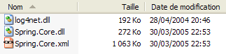
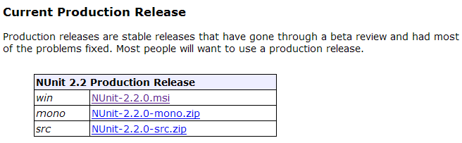

8. Anexos
8.1. Onde encontrar o Spring?
O site principal do Spring é [http://www.springframework.org/]. Esse é o site da versão Java. A versão .NET, atualmente em desenvolvimento (abril de 2005), está disponível no endereço [http://www.springframework.net/].

O site de download está em [SourceForge]:

Depois de baixar o arquivo zip acima, descompacte-o:

Neste documento, utilizamos apenas o conteúdo da pasta [bin]:

Em um projeto do Visual Studio que utiliza o Spring, é necessário realizar sistematicamente duas ações:
- colocar os arquivos acima na pasta [bin] do projeto
- adicionar ao projeto uma referência ao assembly [Spring.Core.dll]
8.2. Onde encontrar o NUnit?
O site principal do Nunit é [http://www.nunit.org/]. A versão disponível em abril de 2005 é a 2.2.0:

Baixe essa versão e instale-a. A instalação cria uma pasta onde você encontrará a versão gráfica de teste:
O que é interessante está na pasta [bin]:


A seta acima indica o utilitário gráfico de teste. A instalação também adicionou novos elementos ao repositório de assemblies do Visual Studio, que vamos explorar agora.
Vamos criar o seguinte projeto do Visual Studio:
A classe testada está em [Personne.vb]:

Public Class Personne
' campos privados
Private _nom As String
Private _age As Integer
' construtor padrão
Public Sub New()
End Sub
' propriedades associadas aos campos privados
Public Property nom() As String
Get
Return _nom
End Get
Set(ByVal Value As String)
_nom = Value
End Set
End Property
Public Property age() As Integer
Get
Return _age
End Get
Set(ByVal Value As Integer)
_age = Value
End Set
End Property
' cadeia de identidade
Public Overrides Function tostring() As String
Return String.Format("[{0},{1}]", nom, age)
End Function
' método init
Public Sub init()
Console.WriteLine("init personne {0}", Me.ToString)
End Sub
' método close
Public Sub close()
Console.WriteLine("destroy personne {0}", Me.ToString)
End Sub
End Class
A classe de teste está em [NunitTestPersonne-1.vb]:
Imports System
Imports NUnit.Framework
<TestFixture()> _
Public Class NunitTestPersonne
' objeto testado
Private personne1 As Personne
<SetUp()> _
Public Sub init()
' cria-se uma instância de Pessoa
personne1 = New Personne
' registro
Console.WriteLine("setup test")
End Sub
<Test()> _
Public Sub demo()
' log na tela
Console.WriteLine("début test")
' inicialização de pessoa1
With personne1
.nom = "paul"
.age = 10
End With
' testes
Assert.AreEqual("paul", personne1.nom)
Assert.AreEqual(10, personne1.age)
' log de tela
Console.WriteLine("fin test")
End Sub
<TearDown()> _
Public Sub destroy()
' acompanhamento
Console.WriteLine("teardown test")
End Sub
End Class
Há vários pontos a serem observados:
- os métodos possuem atributos como <Setup()>, <TearDown()>, ...
- Para que esses atributos sejam reconhecidos, é necessário que:
- o projeto faça referência ao assembly [nunit.framework.dll]
- a classe de teste importe o namespace [NUnit.Framework]
A referência é obtida clicando com o botão direito do mouse em [References] no Explorador de Soluções:
 |  |

O assembly [nunit.framework.dll] deve constar na lista exibida se a instalação do [Nunit] tiver ocorrido sem problemas. Basta clicar duas vezes no assembly para adicioná-lo ao projeto:

Feito isso, a classe de teste [NunitTestPersonne] deve importar o namespace [NUnit.Framework]:
Os atributos da classe de teste [NunitTestPersonne] devem, então, ser reconhecidos.
- o atributo <Test()> indica um método a ser testado
- o atributo <Setup()> indica o método a ser executado antes de cada método testado
- o atributo <TearDown()> indica o método a ser executado após cada método testado
- o método Assert.AreEqual permite testar a igualdade entre dois entités.Il; existem muitos outros métodos do tipo Assert.xx.
- O utilitário NUnit interrompe a execução de um método testado assim que um método [Assert] falhar e exibe uma mensagem de erro. Caso contrário, exibe uma mensagem de sucesso.
Vamos configurar nosso projeto para que ele gere um DLL:

O DLL gerado será chamado de [nunit-demos-1.dll] e será colocado, por padrão, na pasta [bin] do projeto. Vamos gerar nosso projeto. Obtemos na pasta [bin]:

Agora, vamos executar o utilitário de teste gráfico Nunit. Vale lembrar que ele está localizado em <Nunit>\bin e se chama [nunit-gui.exe]. <Nunit> refere-se à pasta de instalação do [Nunit]. Aparece a seguinte interface:

Vamos usar a opção de menu [File/Open] para carregar o DLL e o [nunit-demos-1.dll] do nosso projeto:

O [Nunit] é capaz de detectar automaticamente as classes de teste presentes no DLL carregado. Nesse caso, ele identifica a classe [NunitTestPersonne]. Em seguida, exibe todos os métodos da classe que possuem o atributo <Test()>. O botão [Run] permite executar os testes no objeto selecionado. Se for a classe [NunitTestPersonne], todos os métodos exibidos serão testados. É possível solicitar o teste de um método específico selecionando-o e solicitando sua execução por meio de [Run]. Vamos solicitar a execução da classe:

Um teste bem-sucedido em um método é indicado por um ponto verde ao lado do método na janela à esquerda. Um teste com falha é indicado por um ponto vermelho.
A janela [Console.Out], à direita, mostra as exibições na tela geradas pelos métodos testados. Aqui, quisemos acompanhar o andamento de um teste:
- a linha 1 mostra que o método de atributo <Setup()> é executado antes do teste
- as linhas 2 e 3 são geradas pelo método [demo] testado (veja o código acima)
- a linha 4 mostra que o método de atributo <TearDown()> é executado após o teste